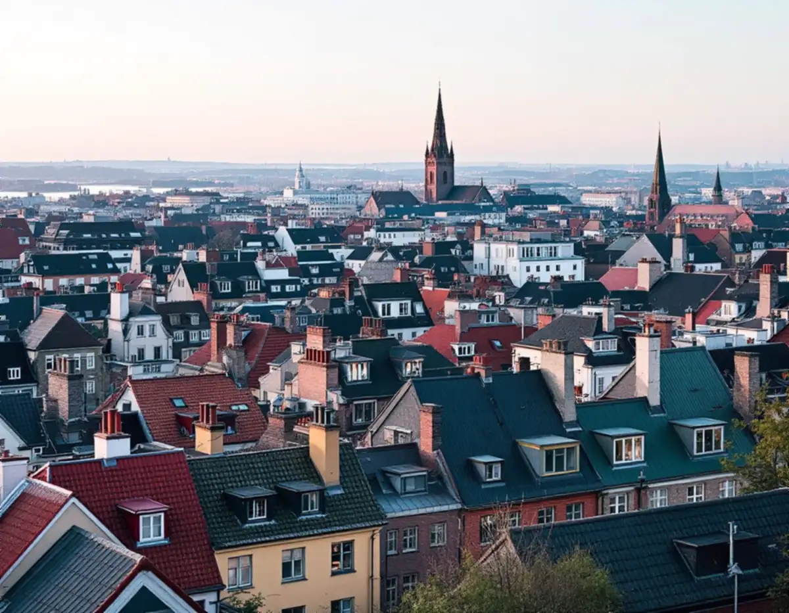
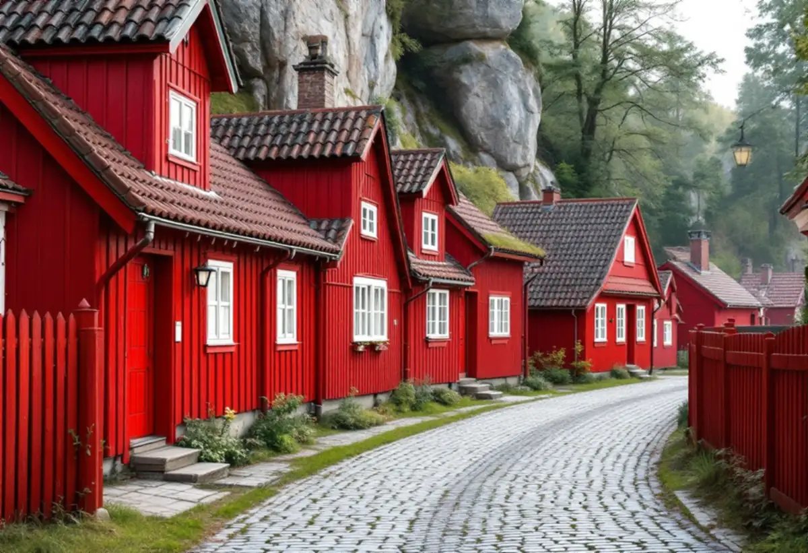

Besök
Gratis besök på taket och vinden tillsammans med styrelsen.
Södermalm har över 77 000 bostäder, och mer än hälften är bostadsrätter. De flesta tak tillhör alltså en förening. Här finns allt från timmerstugor från 1700-talet på Åsöberget till 1920-talets storgårdskvarter och stenstadens branta plåttak. En takrenovering på Södermalm börjar med att ta reda på vilken av de miljöerna huset hör till.

Stadens statistik för 2024 visar 77 525 bostäder i Södermalms stadsdelsområde. 43 680 är bostadsrätter och drygt 10 000 tillhör allmännyttan. Endast 211 bostäder ligger i småhus.
För de flesta på Södermalm är taket därför något styrelsen beslutar om. Det påverkar hur arbetet planeras: medlemmarna ska informeras, ställning och tillträde ska ordnas, och beslutet ska kunna motiveras i föreningens underhållsplan.
Staden beskriver den klassiska stenstaden på malmarna med sluttande tak, oftast plåttäckta och med en lutning på upp till 45 grader, som tillsammans ger ett karaktäristiskt taklandskap. För den tidiga bebyggelsen på malmarna är stadens huvudfokus att husen inte får förvanskas och att alla ändringar ska göras varsamt, ofta i samråd med Stadsmuseet.
För en förening betyder det att en takrenovering helst görs med samma material och kulör. Plåten målas om eller byts där underlaget är skadat, falsar tätas och beslagen runt skorstenar och huvar görs om. Då ändras inte husets utseende och inget bygglov behövs.
På 1910- och 1920-talen byggdes nya kvarter kring stora, planterade gårdar. Kvarteret Metern vid Helgalunden har sin ursprungliga utformning väl bevarad från 1926–27, och kvarteren Draget och Ryssjan vid Blecktornsparken är välbevarade storgårdskvarter från 1920-talet.
I stadens beskrivning av storgårdskvarteren nämns proportioner, fasadindelning, taklandskap och färgsättning som delar av en sammanhållen stadsbild. Ett tak i ett sådant kvarter ska därför renoveras så att det fortsätter att se ut som grannhusens.
På Åsöberget ligger ett 30-tal små, tätt sammanbyggda timmerstugor, till stor del byggda under 1700-talet för arbetare i hamnen. Vita bergen har småskalig bebyggelse från 1700- och 1800-talen. På Östra Mariaberget byggdes husen upp efter en stor brand 1759, och taken var brutna och täckta med tegel.
Det mesta av bebyggelsen inom kulturreservaten på Östra Mariaberget, Skinnarviksberget, Åsöberget och Vita bergen ägs och förvaltas av Stadsholmen. Där är det alltså inte de boende som beställer taket.
För flerbostadshus krävs bygglov när kulör eller material på taket ändras på en sida som vetter mot allmän plats. Är byggnaden eller området särskilt kulturhistoriskt värdefullt gäller utökad lovplikt även för ändringar som annars är lovfria.
Stadsmuseets klassificeringskarta ger en första bild av hur huset är klassat. Ska föreningen ändra något på taket hjälper vi till med takplan och material- och kulörbeskrivning till ansökan.
Under många tak på Södermalm finns vindsförråd, och under en del finns lägenheter. Ska taket renoveras behöver vi komma åt undersidan för att se var vatten har kommit in. Det betyder att förråden ibland måste tömmas längs takfoten eller runt skorstenarna.
Finns det lägenheter i vindsplanet planerar vi arbetet så att takfönster och anslutningar kan göras utan att lägenheten står öppen. Föreningen får veta i förväg vilka medlemmar som berörs, så att de kan informeras i god tid.
När taket är klart går vi igenom det med styrelsen och lämnar foton från varje moment, både från taket och från vinden. Det gör det enklare för föreningen att följa upp arbetet och att planera nästa underhåll i god tid, innan små skador hinner bli stora.

Gratis besök på taket och vinden tillsammans med styrelsen.
Vi kontrollerar Stadsmuseets karta och om ändringen vetter mot gatan.
Skriftligt kostnadsförslag med foton och prioriteringar.
Underlag till medlemmarna om ställning och tillträde.
Ommålning, tätning eller byte av plåt, papp och beslag.
Foton och beskrivning till underhållsplanen.
Bor du i bostadsrätt ger arbete på husets tak inget rotavdrag enligt Skatteverket. Avdraget i en bostadsrätt gäller arbete inne i lägenheten som du själv ansvarar för enligt stadgarna, och taket är föreningens sak. Det är föreningen som beställer och betalar.
Bara 211 bostäder på Södermalm ligger i småhus. Äger du ett småhus på Södermalm räknar Skatteverket däremot reparation och byte av takpannor och hängrännor som rotarbete. Avdraget är 30 procent av arbetskostnaden, högst 50 000 kronor per person och år, och Geal drar det direkt på fakturan. Läs mer under rotavdrag för takarbete.
Kostnaden för en takrenovering på Södermalm påverkas av takets yta och lutning, om plåten ska målas eller bytas, antalet skorstenar, huvar och takfönster, ställning och skydd mot gatan och om bygglov behövs. Läs mer om vad en takrenovering kostar.
Så fungerar en omläggning.
Takrenovering och takomläggning →Det här styr priset.
Vad kostar en takrenovering? →Räkna på takytan och ROT.
Takbyte-kalkylator →Trädgårdsstad med lertegel.
Takrenovering i Enskede →Mälarhöjden, Hägerstensåsen och tre epoker av villor.
Takrenovering i Hägersten →Saltsjöbaden, Boo och Älta.
Takrenovering i Nacka →